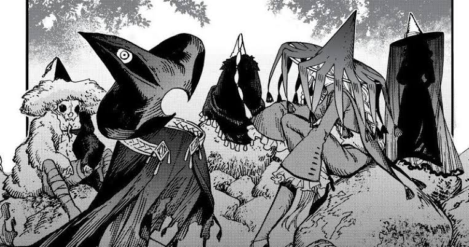

no mundo de witch hat atelier existe duas facções bruxas os chapéus pontos e os abas.os abas quer quebrar o sistema magíco pois eles acham que todos
devem aprender magia e quer trazer as magias proibidas de volta como as de cura e os pontudos são aqueles que seguem o sistema e regras e muito moralistas

| personagens | facção | nível |
|---|---|---|
| Qifrey | chapéu pontudo | mestre |
| coco | não sabe | aprendiz |
| tetia | chapéu pontudo | aprendiz |
| cousta | chapéu aba | aprendiz |
| Agett | chapéu pontudo | aprendiz |